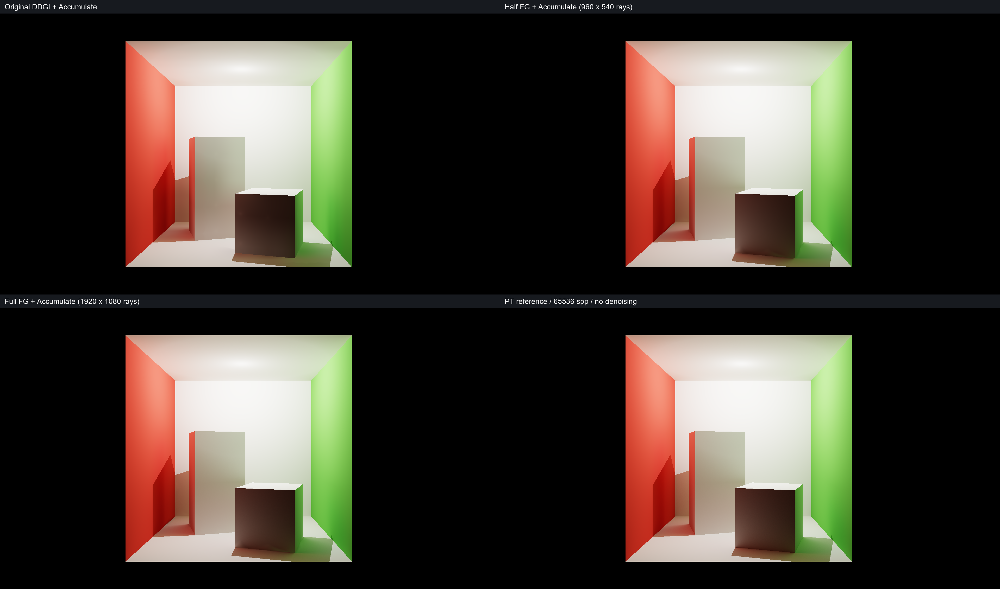
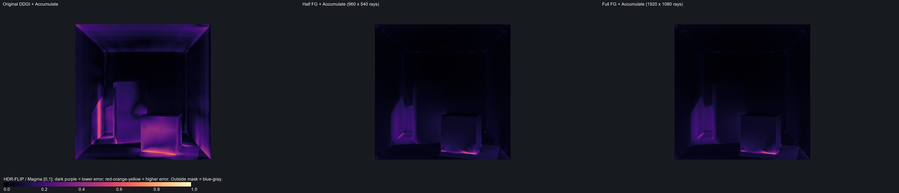
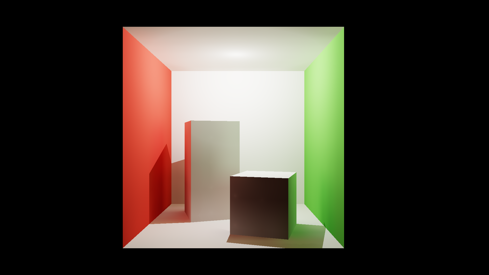
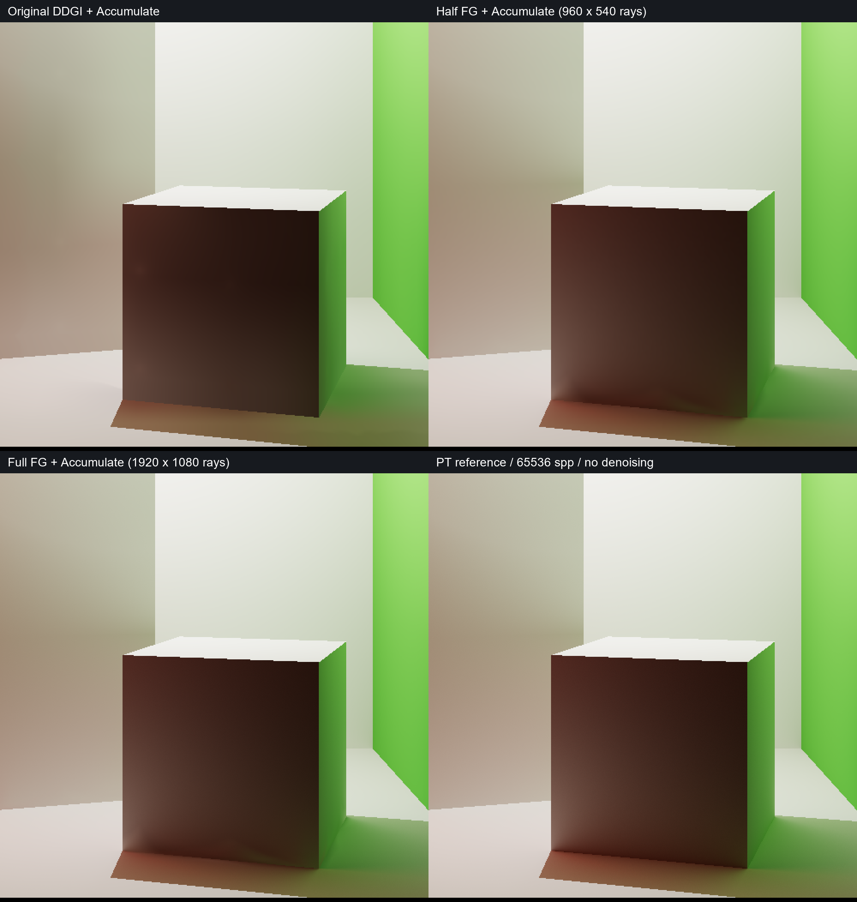

原生渲染 1920×1080；半分辨率 FG 在 960×540 代表像素上发射射线。Lambert Cornell、顶灯点光源、Test Harness 衰减、黑色环境。三组均先预热 probe 2560 帧，再累积 65536 帧，probe 持续更新，NRD 关闭。PT 为每帧 8 spp、两组独立 32768 spp 的平均，共 65536 spp，未经降噪。所有图片采用相同曝光与色调映射。
三组横向原尺寸对比（5760×1132） · 包含 PT 的原尺寸四宫格（3840×2264）

| 方案 | MSE ↓ | HDR-FLIP ↓ | 时间方差 ↓ | GPU 帧耗时 ms |
|---|---|---|---|---|
| Original DDGI + Accumulate | 1.175946e-05 | 0.11449 | 6.061e-17 | 0.933 |
| Half FG + Accumulate (960 x 540 rays) | 9.637959e-07 | 0.04630 | 5.72e-14 | 1.133 |
| Full FG + Accumulate (1920 x 1080 rays) | 9.738224e-07 | 0.04619 | 3.071e-13 | 1.380 |
误差统计针对最后一张累积图，在可见表面 mask 内计算；HDR-FLIP 使用 PPD 67 和参考图推导的统一曝光范围。时间方差取随后 8 帧，表示长时间静态平均后的波动，不能代表实时运动表现，也不宜与旧报告 64 帧窗口直接比较。GPU 耗时为 255 个区间的均值，包含 GBuffer、DDGI probe 更新、FG/重建、Accumulate 和显示；不包含漫长收敛过程，不能将展示画质视为单帧效果。
结果：两种 FG 相对原始 DDGI 的 MSE 均降低约 92%，HDR-FLIP 降低约 60%。在 1080p 下，半／全分辨率已非常接近；半分辨率 MSE 略低约 1%，全分辨率 HDR-FLIP 略低，不能据此断言半分辨率的真实积分更准确，因为重建平滑和有限采样噪声都会影响指标。
本次采用独立半分辨率追踪 dispatch：半分辨率整图 1.133 ms，全分辨率 1.380 ms。半分辨率主表面着色 0.212 ms，独立 FG 追踪 0.276 ms，重建 0.108 ms。主表面和 FG 是 DDGI pass 内部的 GPU dispatch，不是两个独立 render-graph pass；分项已包含在 DDGI 耗时中，不能重复相加。
每张图分别比较该方案与同一张未经降噪的 65536 spp PT Reference，显示每个像素的感知误差分布。暗紫黑色接近 0，表示更接近参考；随着误差增大，颜色经过紫、红、橙，到浅黄色（1）。三张图使用完全相同的 [0,1] Magma 彩色色标和 HDR-FLIP 参数，没有各自拉伸对比度；深蓝灰色背景是不参与统计的表面 mask 外区域。
它表征的是“差异”，不是百分比相似度，也不表示方案比参考更亮还是更暗。HDR-FLIP 同时考虑颜色和视觉特征差异；某个像素的值不能直接解释为该像素的亮度差。表中的 HDR-FLIP 是这些误差值在可见表面上的平均值。PT 本身仍有有限采样误差，热力图会包含它的影响。

原生 1920×1080 误差图：原始 DDGI · Half FG · Full FG。本图使用 Falcor FLIPPass 的 Magma 调色板，仅改变误差的显示颜色，不改变 HDR-FLIP 数值；颜色用于表达误差大小，并非渲染画面本身的亮度。
| Pass | 原始 DDGI ms | Half FG ms | Full FG ms |
|---|---|---|---|
| Visibility | 0.139 | 0.145 | 0.139 |
| DDGI | 0.623 | 0.705 | 1.069 |
| Reconstruct | — | 0.108 | — |
| Accumulate | 0.146 | 0.149 | 0.146 |
| Display | 0.026 | 0.026 | 0.026 |
原始 DDGI：Visibility (GBufferRT) → DDGI → Accumulate → Display 全分辨率 FG：Visibility (GBufferRT) → DDGI [含全分辨率 FG] → Accumulate → Display 半分辨率 FG：Visibility (GBufferRT) → DDGI → Reconstruct → Accumulate → Display PT Reference：Visibility (GBufferRT) → PT (8 spp/frame) → Accumulate → Display
| 阶段 | 分辨率／职责 |
|---|---|
| Visibility | 1920×1080，中心采样，无相机抖动、无 DOF；输出可见性和视线方向，半分辨率路径额外向 Reconstruct 提供全分辨率法线及线性深度。 |
| DDGI：probe 更新 | 9×9×9 probes，每 probe 256 rays；更新 irradiance、distance、relocation/classification。三个方案相同，持续更新。 |
| DDGI：PrimaryShading | 1920×1080。原始 DDGI：直接光＋probe 插值；全分辨率 FG：直接光＋逐像素 FG；半分辨率 FG：只计算主表面直接光、发光／背景及重建所需的材质反射率。 |
| DDGI：HalfGather | 仅半分辨率 FG 启用。独立 960×540 ray-generation dispatch，对应固定全分辨率代表像素 (2x,2y)，沿用原 BRDF 采样与随机种子；读取前一 dispatch 的结果前有 UAV 同步。此 Lambert 场景每个有效采样位置最多一根漫反射 FG 射线。 |
| Reconstruct | 仅半分辨率实验图启用。1920×1080 compute，8×8 thread groups；16 邻点深度／法线引导重建，乘回全分辨率反射率并加直接光。未改变滤波规则。 |
| Accumulate | 1920×1080 线性 HDR 逐像素静态平均；预热后清空，再累积 65536 帧。没有重投影；实验镜头固定，autoReset 关闭。 |
| Display | 相同曝光和 ACES 配置。计时包含此 pass；线性 EXR 捕获阶段仅标记 Accumulate.output，发布 PNG 统一使用 ACES fitted +3EV / sRGB。 |
这是本实验使用的固定模式图。交互启动器为了支持动态切换，会始终连接 Reconstruct；在全分辨率下它退化为逐像素合成。没有 NRD、RTXDI 或 ReSTIR；PT 的间接光由路径追踪计算，而 FG 命中点的后续漫反射间接光仍查询 DDGI。

单图：DDGI · Half FG · Full FG · PT

| 方案 | 32768→65536 MSE 变化 | HDR-FLIP 变化 | 末次翻倍图像差异 / 相对 PT 误差 |
|---|---|---|---|
| ddgi | -0.06% | -0.01% | 0.00% |
| half | -0.43% | -0.33% | 0.30% |
| full | -1.65% | -0.18% | 1.58% |
检查结果：{'mse_and_flip_change_below_3percent': True, 'estimated_tail_below_5percent': True, 'reference_noise_below_5percent': True}。PT reference 剩余噪声估计 MSE：2.230013e-08。这些是有限采样的检查，相关 probe 更新会影响估计，不是无限采样证明。与低分辨率实验不能只比较数值：空间重建覆盖的世界范围和指标的像素尺度均发生变化。
完整参数与结果 JSON · CSV。原始线性 EXR 位于 build/highres-1080p-split-rerun。